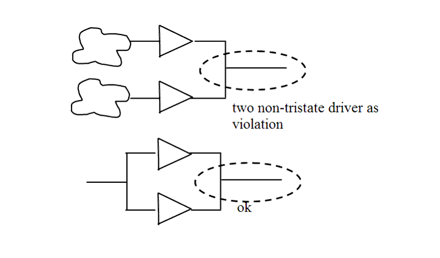

| Description | A non-tristate net (that is, a net driven by a non-tristate cell) must not have multiple drivers except in cases where drivers are the same and connected in parallel (see example). Structures with multiple identical drivers may be needed when driving highly loaded nets.Arguments:
%s1 is the name of the non-tristate net. Source Position: The position is the line in which the non-tristate net is defined. |
| Policy | DESIGN |
| Ruleset | STRUCTURE |
| Language | VHDL/Verilog |
| Type | Hardware |
| Severity | Error |
This is an example of invalid Verilog code, followed by a circuit diagram that illustrates the problem:
module ntl_str76_top (); wire net_01, net_02,net_03,net_04; buf I1(net_03, net_01); buf I2(net_03, net_02); // NTL_STR76 fires -- net_03 is derived from two drivers buf I3(net_04, net_02); buf I4(net_04, net_02); // OK -- net_04 is driven by parallel driver endmodule
Sample Output
5: wire non_trist1, non_trist2, non_trist3, non_trist4;
^
test_str76.v:5: STRUCTURE> [ERROR] NTL_STR76: A non-tristate net can
have only one non-tristate driver except in case of
parallel driver top.non_trist3
--- The non-tristate driver: top.I5.~buf0 (file: test_str76.v,
line: 15)
--- The non-tristate driver: top.I6.~buf0 (file: test_str76.v,
line: 16)
In the above sample output,
Secondary Message
The non-tristate driver: %s2
Argument
%s2 is the name of the non-tristate driver.
Source Position
The position is the line in which the non-tristate driver is instantiated.
Schematics in Path View
This rule will stop at the first driver that violates. The schematics will display all the drivers that are already checked when this rule is violated.
